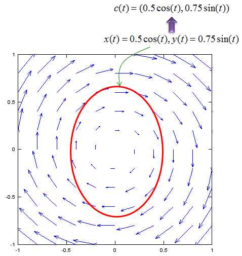

Calculus - Line Integral Home : www.sharetechnote.com
If you are new to the concept of Integration, I would suggest you to read the "Integration" page first.
Let's look at one example as shown below. In this example, you see a lot of vectors in blue arrow and vectors in red arrow. You see the red vector is sitting on top of a curve (path) shown in red curve. Each of the red vector is the tangential to each point on the path. Now I want to take the inner product of each red vector and blue vector and sum them all. This operation can be represented in a mathematical form as shown below. This kind of integration is called "Line Integral".

One special case of line integral is the integration over a closed path which is as shown in the following example. In this example, you see a lot of vectors in blue arrow and vectors in red arrow. You see the red vector is sitting on top of a curve (path) shown in red curve. Each of the red vector is the tangential to each point on the path. Now I want to take the inner product of each red vector and blue vector and sum them all. This operation can be represented in a mathematical form as shown below. The mathematical operation is exactly same as the one shown in previous example. The only difference is the path the red vectors are going along. The path in this example is a closed curve. This kind of integration is called "Circular Integral" (The closed path need not to be exact circle as below. It can be any arbitrary shape of closed curve).
How to represent a curve in a function ?
I think (hope) the concept of line integral didn't sound so complicated to you. At least, it didn't sound so complicated to me, but when I was give specific mathematical equation or formular for the line ingral or when I was asked to write a mathematical equation/formular for a real application using line integral, I didn't know what to do and couldn't understand what it really means when I was given those equations from textbook example. After a long time struggle, what I realized was that the reason why I have this kind of difficulty is not because I didn't understand the concept of line integral itself, but because I was not familar to how to represent the curve (path) in a function.
What is the definition of the function ? Here goes the definition from http://www.mathisfun.com/definitions/function.html . It says
"A function is a special relationship between values : Each of its input values gives back exactly one output value".
The keyword in this definition is that "exactly one output value".
Let's look at following three example. Which of these three example is a function ? which is not ?
Plot A definitely can be a function since one value on the x axis (independent variable) is mapped to ONLY ONE value on y axis (dependent variable).
How about plot B ? Is this a function ? It cannot be a function at least according what we have learned in most of high school math. In this example, some x value maps to two different y value. so it is not one to one map between dependent variable and independent variable.
How about plot C ? Is this a function either ? It cannot be a function according what we have learned in most of high school math. In this example, some x value maps to two different y value. so it is not one to one map between dependent variable and independent variable.
Here we have problem. Most of the curve that we deal with in line integral look like plot B or plot C. Is there any way to represent this kind of curve as a function ? If you take the course of advanced high school math or university level math, you would know that it is possible to represent this type of curve in a function. Just give you the direct answer, you can represent this type of curves in one of the following type of function.
- i) Parametric Function
- ii) Vector Function
- iii) Complex Function (Function with complex variable)
I would not explain about these functions in this page. Now you may see why most of applications of line integral are given in the form of Parametric function, Complex function or vector function (I would write a separate pages for these functions later when I have chance. For now, I would just assume that you are familiar with these functions. I know, unfortunately we were asked to learn 'line integral' before you learn or is used to the concept of various different types of functions). The point here is that to understand the meaning of line integral, first you have to be very familiar with how to represent a curve in a mathematical function.
Examples of Line Integral
Here goes some examples for Line Integral. I would suggest you pay very careful attention to each steps and make it sure that you understand the meaning of each steps. Just memorizing the mathematical operation would not help you much and you would get confused within a couple of days.
< Example 1 > Arc Length
The question is this example is "Calculate the length of the following red curve (half circle) using Line Integral".
First, think about how to approach this problem and how to come up with mathematical equation for this problem.
The first step is to devide the curve into a lot of small segments as shown below.
Here, the ds represents the length of each segment. So the solution to our questions is to integrate ds along the whole curve. It can be represented as shown below.
Once you come up with the mathematical equation in the line integral, next step is to think about how to represent the curve in mathematical form.
There can be many ways to do it, but I like to use parametric function to represent the curve. This example, the curve can be represented as shown below. Note that we represented two variable x,y with a single variable 't'.
Since we have the function for the curve using the variable t, we have to convert our original 'integral expression' into the one using the variable t. The first step for this is to convert ds into a form using dt. This step is the most difficult part of line integral but usually textbook or math class would not explain about this process in detail. The best way is to represent the 'ds' in a picture. In case of this example, ds can be represented as shown below. Note as well that how dx, dy is represented here.
Since ds is the length of a line segment, it can be describe as follows using dx, dy.
Now you have to think about how to convert this ds into a form using dt. This is also very tricky part and it requires some mathematical trick. Only making a lot of practice would make you familiar with this process. There is no single/solid method for this. In case of this example, we convert as shown below.
Now we have converted ds into a form using dt. If you plug this result into the original integral equation, you would get the new integral equation with 'dt' as shown below.

< Example 2 > Line Integral of Vector Field
Now we have an example doing line integral in vector field. We were give a vector field as shown below and want to integrate the field over the red oval. If you are not familiar with vector field, see the vector field page first.
First, let's think about how to describe the curve into a mathematical form. It can be represented into a parametric function as shown below. Here I combined two equation(x(t),y(t)) into a single fuction c(t). This is just for simplicity.

Now we can represent our problem into a mathematical form as shown below. (The 'dot' in the equation means 'inner product').
Since we have the function for the curve using the variable t, we have to convert our original 'integral expression' into the one using the variable t. The first step for this is to convert the vector ds into a form using dt. This step is the most difficult part of line integral but usually textbook or math class would not explain about this process in detail. The best way is to represent the 'ds' in a picture. In case of this example, ds can be represented as shown below. Note as well that how the vector dx, dy is represented here.
Since ds is a vector field, we can represent the vector ds as shown below.
Now you have to think about how to convert this ds into a form using dt. This is also very tricky part and it requires some mathematical trick. Only making a lot of practice would make you familiar with this process. There is no single/solid method for this. In case of this example, we convert as shown below.
Now we have converted ds into a form using dt. If you plug this result into the original integral equation, you would get the new integral equation with 'dt' as shown below.
Just plug in the vector field function and curve function into this equation and solve the equation. You would get the following answer and this is easy step.